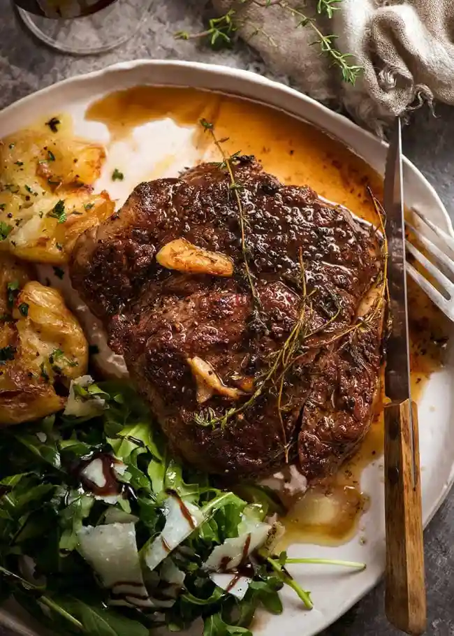

Steak

Description
A steak is a thick cut of meat generally sliced across the muscle fibers,
sometimes including a bone. It is normally grilled or fried. Steak can be
diced, cooked in sauce, such as in steak and kidney pie, or minced and
formed into patties, such as hamburgers. Steaks are cut from animals
including cattle, bison, camel, goat, horse, kangaroo, sheep,
ostrich, pigs, reindeer, turkey, deer, and zebu, as well as various types
of fish, especially salmon and large fish such as swordfish, shark, and
marlin. For some meats, such as pork, lamb and mutton, chevon, and veal,
these cuts are often referred to as chops. Some cured meat, such as
gammon, is commonly served as steak.
Ingredients
- 1 – 2 boneless ribeye or scotch fillet , 2.5 cm / 1″ thick, approx 300g/10 oz each
- 1 tbsp vegetable oil
- ▢Salt and pepper
- 75g / 5 tbsp unsalted butter , cut into 1.25cm / 1/2″ cubes
- 6 sprigs fresh thyme or 3 sprigs rosemary
- 5 garlic cloves , peeled and smashed to split
Steps
- Bring to room temp: Take the steak out of the fridge 30 minutes prior to bring to room temperature.
- Dry steaks: Pat dry with paper towels
- Heat skillet: Heat oil in a heavy based skillet over high heat until it is very hot – you should see smoke!
- Season: Sprinkle each side of the steak generously with salt and pepper, then immediately place in the skillet
- Sear Side 1: Cook for 2 – 2.5 minutes until you get a great crust, then turn.
- Garlic Butter: Leave for 1 minute, then push steaks to one side and toss in butter, garlic and thyme. BE CAREFUL – the thyme will sputter!
- Baste: As soon as the butter is melted, continuously spoon the butter over the steak until it’s cooked to your liking – 2 minutes in total for the 2nd side for medium rare (52C/125F, chart below for other doneness temps)
- Basting also renders fat on the side of the steak – use tongs to sear the edges at the end if you want it browned more.
- Rest: Transfer steak to a plate and cover loosely with foil, rest for 5 to 10 minutes
- Serve steak with a bit of the butter from the skillet drizzled on top.